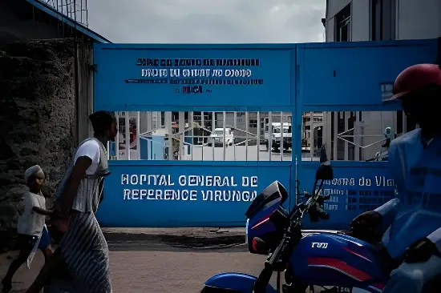

Depuis le 15 mai 2026, la République démocratique du Congo est officiellement en proie à sa 17e épidémie de maladie à virus Ebola. La souche en cause, le variant Bundibugyo, est particulièrement redoutable : ni vaccin ni traitement spécifique n'existent contre lui. L'OMS a déclenché une urgence de santé publique de portée internationale en deux jours à peine. Dans une province d'Ituri déjà fragilisée par les conflits armés et les infrastructures effondrées, la course contre la montre est engagée — avec le risque que le monde n'entende pas l'alarme à temps.
Le virus Ebola a été identifié pour la première fois en 1976 en République démocratique du Congo — alors Zaïre —, près de la rivière éponyme. Depuis, l'Afrique subsaharienne a enregistré plus de 15 000 morts liés à ce pathogène sur cinquante ans d'histoire épidémique. Le virus provoque une fièvre hémorragique aiguë caractérisée par des fièvres soudaines, des douleurs musculaires, des vomissements, des diarrhées et, dans les cas graves, des hémorragies internes et externes. Son taux de létalité moyen oscille entre 25 % et 90 % selon les souches et les conditions de prise en charge.
Le vaccin rVSV-ZEBOV (commercialisé sous le nom Ervebo), approuvé en 2019 et déployé massivement depuis, n'est efficace que contre la souche Zaïre — la plus répandue et la plus meurtrière. Or l'épidémie de 2026 est causée par le variant Bundibugyo, identifié pour la première fois en Ouganda en 2007-2008, et contre lequel il n'existe, à ce jour, aucun vaccin homologué ni aucun antiviral spécifique. Cette lacune thérapeutique majeure transforme la réponse sanitaire en pure gestion du foyer : isolement, traçage des contacts, enterrements sécurisés, protection des soignants.
Un soignant de Bunia, capitale de la province d'Ituri, présente des symptômes évocateurs d'Ebola et décède trois jours plus tard. Il est le premier cas suspect connu de l'épidémie.
L'OMS est alertée d'une potentielle flambée. Les premiers tests réalisés reviennent négatifs — les kits disponibles sur place ne détectent que la souche Zaïre, et non Bundibugyo. L'épidémie continue de se propager sans être identifiée.
Des tests adaptés à la souche Bundibugyo sont enfin déployés. Les premiers cas positifs sont confirmés. Les autorités congolaises découvrent alors que l'épidémie a déjà atteint plusieurs zones sanitaires de l'Ituri.
Le ministère de la Santé de la RDC déclare officiellement l'épidémie. Au même moment, les autorités confirment plusieurs centaines de cas suspects dans la province d'Ituri.
L'OMS recense 8 cas confirmés en laboratoire, 246 cas suspects et 80 décès suspects en Ituri. Deux cas confirmés sont déclarés à Kampala (Ouganda), deux voyageurs venus de RDC. Un cas est confirmé à Goma. Le 17 mai, Tedros Adhanom Ghebreyesus déclare une urgence de santé publique de portée internationale (USPPI) — sans même attendre la réunion du Comité d'urgence, une première dans l'histoire de l'OMS.
Peter Stafford, médecin américain missionnaire travaillant en RDC, est testé positif au virus Bundibugyo et transféré en Allemagne pour traitement. Sa famille est placée sous surveillance.
Le directeur général de l'OMS annonce près de 600 cas suspects et 139 décès suspects. Il souligne que ces chiffres sont sous-estimés en raison du temps de circulation du virus avant détection. Des décès parmi les personnels de santé indiquent une transmission hospitalière active.
La province d'Ituri, dans le nord-est de la RDC, cumule les facteurs d'amplification épidémique. Carrefour commercial et migratoire entre la RDC, l'Ouganda et le Soudan du Sud, elle est traversée par des flux humains intenses qui facilitent la diffusion du virus. Les infrastructures sanitaires y sont chroniquement sous-dotées : en 2025, l'aide humanitaire n'a couvert que 27 % des besoins en RDC, selon Oxfam. Le pont Nizi — principal ouvrage reliant Iga Barrière à Mongbwalu, l'une des villes les plus touchées — s'est effondré en novembre 2025 et n'a jamais été reconstruit, rendant le foyer épidémique partiellement inaccessible aux équipes de riposte.
À l'est, la province voisine du Nord-Kivu est sous contrôle partiel du M23, groupe armé soutenu par le Rwanda, ce qui complique davantage les opérations sanitaires. Un cas confirmé a été détecté à Goma, ville sous contrôle du M23, après qu'une femme infectée s'y soit rendue depuis Ituri. Cette jonction entre crise sécuritaire et crise sanitaire constitue le scénario redouté par les experts depuis des années.
L'épidémie de 2026 s'inscrit dans une longue séquence. La RDC a été frappée par 17 épidémies depuis la découverte du virus sur son territoire en 1976, soit davantage qu'aucun autre pays au monde. L'épisode le plus meurtrier reste celui du Nord-Kivu et de l'Ituri entre 2018 et 2020 : 2 299 morts pour environ 3 500 malades, rendu particulièrement difficile à contenir par l'insécurité et la méfiance des populations envers les équipes de riposte.
La flambée la plus dévastatrice à l'échelle mondiale reste celle d'Afrique de l'Ouest (2014–2016), qui avait rompu le schéma habituel d'épidémies confinées à des zones reculées de l'Afrique centrale. Déclenchée en Guinée fin 2013, elle s'était propagée au Libéria et à la Sierra Leone pour atteindre 28 610 cas et 11 610 morts — dont des cas importés en Europe et aux États-Unis. Cette crise avait conduit à une refonte profonde des mécanismes d'alerte de l'OMS.
| Épidémie | Souche | Cas / Décès | Statut |
|---|---|---|---|
| RDC 2026 (Ituri) | Bundibugyo | ~600 suspects / 139+ décès | En cours |
| RDC 2025 (Kasaï) | Zaïre | 64 cas / 45 décès | Terminée déc. 2025 |
| RDC 2018–2020 (Kivu) | Zaïre | ~3 500 cas / 2 299 décès | Terminée |
| Afrique de l'Ouest 2014–2016 | Zaïre | 28 610 cas / 11 610 décès | Terminée |
| Ouganda 2007–2008 | Bundibugyo | 164 cas / 55 décès | Terminée |
La décision de l'OMS de déclencher l'USPPI en deux jours seulement — sans convoquer de Comité d'urgence préalable — constitue une première dans l'histoire de l'organisation. Lors de l'épidémie d'Afrique de l'Ouest en 2014, il avait fallu six mois avant cette même déclaration. Face au variant COVID-19, quelques semaines. La rapidité de la décision en 2026 reflète à la fois les leçons tirées des crises passées et la gravité perçue de la situation : une souche sans vaccin, une zone de conflit, des frontières poreuses.
L'OMS a immédiatement appelé la RDC et l'Ouganda à renforcer la surveillance sanitaire, le traçage des contacts, les capacités de laboratoire et l'isolement des cas suspects. MSF a mobilisé du personnel médical dans la région. Des essais cliniques de vaccination d'urgence contre la souche Bundibugyo ont été lancés en Ouganda en février 2025 — leur efficacité reste à prouver dans les conditions de terrain actuelles.
« Le nombre de cas et de décès que nous constatons en si peu de temps, associé à la propagation dans plusieurs zones sanitaires et désormais au-delà de la frontière, est extrêmement préoccupant. »
— Trish Newport, responsable du programme d'urgence de MSF, mai 2026L'épidémie d'Ebola de 2026 révèle une vérité que la communauté internationale préfère ne pas voir : la santé publique mondiale reste fragile là où elle devrait être la plus robuste. La RDC, épicentre de 17 épidémies en cinquante ans, dispose de systèmes de surveillance chroniquement sous-financés. La souche Bundibugyo, connue depuis 2007, n'a jamais suscité le même effort de recherche vaccinale que la souche Zaïre. Pendant ce temps, les coupes dans l'aide internationale réduisent chaque année la capacité de riposte. Ce n'est pas l'imprévisibilité du virus qui menace le monde — c'est le choix délibéré de ne pas se préparer à ce que l'on sait pourtant inévitable.